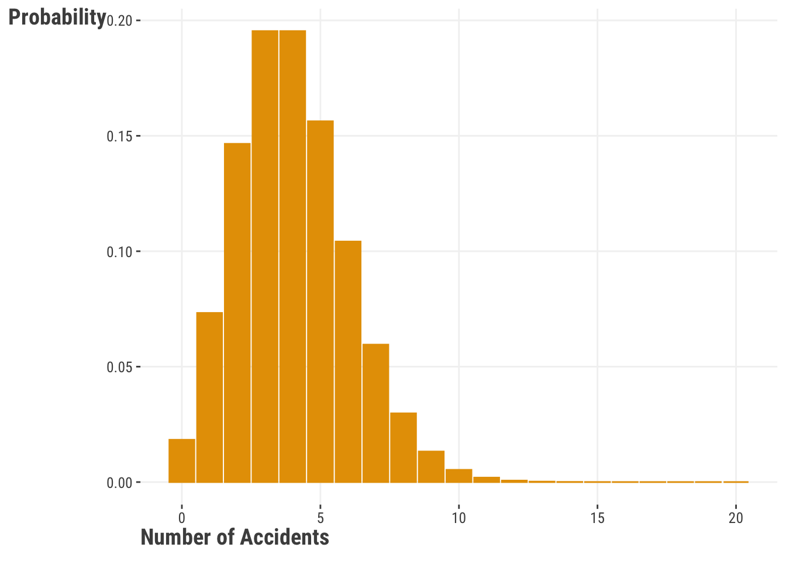

4 Generalized Linear Models
What happens when your target variable isn’t really a continuous variable, but is instead some other type of response? Maybe you’ve got a binary condition, like good or bad, or maybe you’ve got a count of something, like the number of times a person has been arrested. In these cases, you can use a linear regression, but it often won’t do exactly what you want. But you can generalize our approach and use a generalized linear model to help yourself in these situations.
Generalized linear models exist to map different distributions into linear space. This allows us to use the same linear model framework that we’ve been using, but with different types of data.
These models work by generalizing the linear model to different distributions of the target variable. Our coefficients will certainly take on a new meaning; so while we cannot interpret them as we would coefficients from a linear regression, we can still use the general framework.
4.1 Key Ideas
- A simple tweak to our previous approach allows us to generalize are linear model to account for other settings.
- Common distributions such as binomial, poisson, and others can often do better for us both in terms of model fit and interpretability.
- Getting familiar with just a couple distributions will allow you to really expand your modeling repertoire.
4.1.1 Why this matters
The linear model is powerful on its own, but even more so when you realize you can extend many other data settings, some of which are implicitly nonlinear! When we want to classify observations, count them, or deal with proportions and other things, simple tweaks of our standard linear model allow us to handle such situations.
4.1.2 Good to know
Generalized linear models are a broad class of models that extend the linear model to different distributions of the target variable. In general, you’d need to have a pretty good grasp of linear regression before getting too carried away here.
4.2 Distributions & Link Functions
Remember how linear models really enjoy the whole Gaussian distribution scene? The essential form of the linear model can be expressed as follows:
\[ \mu = \alpha + X\beta \] \[ y \sim \textrm{Normal}(\mu,\sigma) \]
Not all data follows a Gaussian distribution. Instead, we often find some other form of an exponential distribution. So, we need a way to incorporate different distributions of the target into our model. Distributions cannot do it alone! We also need a link function to connect the linear model to the distribution.
From a theoretical perspective, link functions are tricky to get your head around.
- Find the exponential of the response’s density function and derive the canonical link function…
From a conceptual perspective, all they are doing is allowing the linear feature to “link” to a distribution function’s mean. If you know a distribution’s canonical link function, that is all the deeper you will probably every need.
At the end of the day, these link functions will convert the target to an unbounded continuous variable. The take-away here is that the link function describes how the mean is generated from the predictors.
4.3 Logistic Regression
4.3.1 Why Should You Care
You will often have a binary variable that you might want to use as a target – it could be dead/alive, lose/win, quit/retain, etc. You might be tempted to use a linear regression, but you will quickly find that it is not the best option. You are going to be figuring out the probability of moving from “failure” to “success”, given the features in your model.
TODO: can probably move distribution part of this section to appendix as part of general discussion of some distributions worth knowing, esp. as this is focused on binomial as a count, and the model focus is on the binary/bernoulli special case.
4.3.2 The Binomial Distribution
Logistic regression is substantially different than linear regression. It is also a bit confusing, because it is named after its link function (logit) instead of its distribution (binomial). Instead of that nice continuous target, we are dealing with a binomially-distributed target and the target takes the form of a binary variable.
We don’t have a \(\mu\) or \(\sigma^2\) to identify the shape of the binomial distribution; instead we have p and n, where p is a probability and n is the number of trials. We tend to talk about p with regard to the probability of a specific event happening (heads, wins, defaulting, etc.).
Let’s see how the binomial distribution looks with 100 trials and probabilities of “success” at p = .25, .5, and .75:
If we examine the distribution for a probability of .5 in Figure 4.1, we will see that it is centered over 50 – this would suggest that we have the highest probability of encountering 50 successes if we ran 100 trials. If we run 100 trials 100 times and the outcome is 50/50, the most common outcome from those 100 trials would be 50 successes. with a decreasing probability of observing more or less successes as we move away from 50. Shifting our attention to a .75 probability of success, we see that our density is sitting over 75. Again running 100 trials, would give us the highest probability of observing 75 successes. Some of those 100 trials produce more or less than 75 successes, but with lower probabilities as you get further away from 75.
Since we are dealing with a number of trials, it is worth noting that the binomial distribution is a discrete distribution. If you have any interest in knowing the probability for a number of success under the binomial distribution, we can use the following formula:
\[P(x) = \frac{n!}{(n-x)!x!}p^xq^{n-x}\]
While we don’t need to dive into finding those specific values for the binomial distribution, we can spend our time exploring how it looks in linear model space:
\[ \textrm{logit}(p) = \alpha + X\beta \]
\[y \sim \textrm{Binomial}(n, p) \\ \]
The logit function is defined as:
\[\textrm{log}\frac{p}{1-p}\]
We are literally just taking the log of the odds (the log odds becomes important later).
Now we can map this back to our model:
\[\textrm{log}\frac{p}{1-p} = \alpha + X\beta\]
And finally we can take that logistic function and invert it (the inverse-logit) to produce the probabilities.
\[p = \frac{\textrm{exp}(\alpha + X\beta)}{1 + \textrm{exp}(\alpha + X\beta)}\]
Whenever we get coefficients for the logistic regression model, we are always going to get them as log odds. We can exponentiate them to get the odds ratio, but we can also exponentiate them and divide by 1 + that value to get the probability.
4.3.3 Probability, Odds, and Log Odds
Probability lies at the heart of all of this. We can look at the relationship between the probability, odds, and log odds. We can start with a set of probability values where \(0 < p > 1\)
With that list of probability values, we can convert them to odds with \(\\p\, / 1 - p\).
We can see how those probability values map to odds in Figure 4.2.
Now, we can take those odds values and convert them to log odds.

If you’ve ever seen the sigmoid featured in Figure 4.3 before, it is the classic logistic function!
We can clearly go back and forth between the 3, but the main message here is that we took a bounded variable in probability and transformed it to continuous space.
We will see more about how this happens after playing with the model.
4.3.4 Data Import and Preparation
We are going to return to our movie reviews data and we are going to use rating_good as our target. Before we get to modeling, see if you can find out the frequency of “good” and “bad” reviews. We will use word_count and gender as our predictors. Before we move on, though, find the probability of getting a “good” review.
TODO: change import to df_reviews and proceed accordingly. Leave model fitting via optim to estimation chapter
reviews = read.csv("data/movie_reviews_processed.csv")X = reviews[, c("word_count", "gender")]
X = cbind(1, X)
X$gender = ifelse(X$gender == "male", 1, 0)
X = as.matrix(X)
y = reviews$rating_goodimport pandas as pd
reviews = pd.read_csv("data/movie_reviews_processed.csv")X = reviews[['word_count', 'gender']]
y = reviews["rating_good"]4.3.5 Standard Functions
To get started with our first logistic regression model, let’s use the glm function from R and Python’s statsmodels function.
model_logistic = glm(
rating_good ~ word_count + gender,
data = reviews,
family = binomial
)
summary(model_logistic)
Call:
glm(formula = rating_good ~ word_count + gender, family = binomial,
data = reviews)
Coefficients:
Estimate Std. Error z value Pr(>|z|)
(Intercept) 1.7124 0.1814 9.44 <2e-16 ***
word_count -0.1464 0.0155 -9.44 <2e-16 ***
gendermale 0.1189 0.1375 0.86 0.39
---
Signif. codes: 0 '***' 0.001 '**' 0.01 '*' 0.05 '.' 0.1 ' ' 1
(Dispersion parameter for binomial family taken to be 1)
Null deviance: 1370.4 on 999 degrees of freedom
Residual deviance: 1257.4 on 997 degrees of freedom
AIC: 1263
Number of Fisher Scoring iterations: 4import statsmodels.api as sm
X = sm.add_constant(X)
X = pd.get_dummies(X, drop_first = True)
model_logistic = sm.Logit(y, X.astype(float)).fit()Optimization terminated successfully.
Current function value: 0.628697
Iterations 5model_logistic.summary()| Dep. Variable: | rating_good | No. Observations: | 1000 |
| Model: | Logit | Df Residuals: | 997 |
| Method: | MLE | Df Model: | 2 |
| Date: | Sun, 10 Mar 2024 | Pseudo R-squ.: | 0.08245 |
| Time: | 14:49:04 | Log-Likelihood: | -628.70 |
| converged: | True | LL-Null: | -685.19 |
| Covariance Type: | nonrobust | LLR p-value: | 2.925e-25 |
| coef | std err | z | P>|z| | [0.025 | 0.975] | |
| const | 1.7124 | 0.181 | 9.442 | 0.000 | 1.357 | 2.068 |
| word_count | -0.1464 | 0.016 | -9.436 | 0.000 | -0.177 | -0.116 |
| gender_male | 0.1189 | 0.138 | 0.865 | 0.387 | -0.151 | 0.388 |
4.3.6 Interpretation and Visualization
We need to know what those results mean. The coefficients that we get from our model are in log odds. We can exponentiate them to get the odds ratio, but we can also exponentiate them and divide by 1 + that value to get the probability. Interpretting log odds is a fool’s errand, but we can at least get a feeling for them directionally. A log odds of 0 would indicate no relationship between the feature and target. A positive log odds would indicate that an increase in the feature will increase the log odds of moving from “bad” to “good”, whereas a negative log odds would indicate that a decrease in the feature will decrease the log odds of moving from “bad” to “good”. We can convert those log odds to help make some more sense from them.
When we exponentiate the log odds coefficients, we are given the odds ratio. This is the ratio of the odds of the outcome (i.e., success from our binomial distribution) occurring for a one unit increase in the predictor.
(Intercept) word_count gendermale
5.5423 0.8638 1.1263 Fortunately, the intercept is easy – it is the odds of a “good” review when word count is 0 and gender is “female”. We see that we’ve got an odds ratio of .86 for the word_count variable and 1.12 for the male variable. An odds ratio of 1 means that there is no change in the odds of the outcome occurring – essentially that the predictor does not influence the target. An odds ratio of less than 1 means that the odds of the outcome occurring decrease as the predictor increases (while a bit more complicated to wrap your head around, it captures the idea of the odds of moving from a “bad” review to a “good” review decreasing). An odds ratio of greater than 1 means that the odds of the outcome occurring increase as the predictor increases (again, the odds of moving from a “bad” review to a “good” review increasing).
It is far more intuitive to interpret the probability. We can do this by exponentiating the coefficients and dividing by 1 + that value. This will give us the probability of the outcome occurring for a one unit increase in the predictor.
(Intercept) word_count gendermale
0.8471 0.4635 0.5297 We would say that our probability of moving from a “bad” review to a “good” review is .84 when there are 0 words in the review and the gender is female. Since word_count is below .5, we know that it will have a negative relationship with the probability of moving from “bad” to “good”; being a male reviewer will have a positive relationship with the probability of moving from “bad” to “good”.
And visualizing those probabilities is absolutely the best way to see how the features influence the target:
TODO: Use output to make a better visual, also use see over sjPlot
In Figure 4.4, we can see a clear negative relationship between the number of words in a review and the probability of being considered a “good” movie. As we get over 20 words, the predicted probability of being a “good” movie is less than .2.
TODO: Use output to make a better visual

In Figure 4.4, we can see a clear negative relationship between the number of words in a review and the probability of being considered a “good” movie. As we get over 20 words, the predicted probability of being a “good” movie is less than .2. It does not appear that gender has much of an effect on the probability of being a “good” movie, since the curves are very similar to each other.
There are interesting issues at play here with regard to our predictor coefficients (what can be considered a relative effect) and the model’s effect as a whole on the probability (the absolute effect). In circumstances where the intercept is very large (essentially promising a success), the relative effect of a coefficient is practically meaningless. Similarly, very negative coefficients render the relative effects useless.
4.3.7 Objective Function
Let’s see how we can pick that work apart to create our own functions. We can use maximum likelihood estimation to estimate the parameters of our model.
logreg_ml = function(par, X, y) {
beta = par
N = nrow(X)
LP = X %*% beta
mu = plogis(LP)
L = dbinom(y, size = 1, prob = mu, log = TRUE)
-sum(L)
}def logreg_ml(par, X, y):
beta = par
N = X.shape[0]
LP = X.dot(beta).to_numpy()
mu = [1 / (1 + np.exp(-x)) for x in LP]
mu_minus_1 = [1 - x for x in mu]
L = y*np.log(mu) + (1 - y)*np.log(mu_minus_1)
return -np.sum(L)
4.3.8 Model Fitting
Now that we have our objective function, we can fit our model. We will use the optim function in R and the minimize function in Python.
init = rep(0, ncol(X))
names(init) = c('intercept', 'b1', 'b2')
fit_ml = optim(
par = init,
fn = logreg_ml,
X = X,
y = y,
control = list(reltol = 1e-8)
)
pars_ml = fit_ml$par
pars_mlintercept b1 b2
1.7122 -0.1464 0.1189 import numpy as np
from scipy.optimize import minimize
init = np.zeros(X.shape[1])
fit_ml = minimize(
fun = logreg_ml,
x0 = init,
args = (X, y),
method = 'BFGS',
options = {'disp': True}
)Optimization terminated successfully.
Current function value: 628.696593
Iterations: 11
Function evaluations: 68
Gradient evaluations: 17fit_ml.xarray([ 1.71240414, -0.14638763, 0.11891015])TODO: move one of these so we don’t have back-to-back
4.4 Poisson Regression
4.4.1 Why Should You Care
Like logistic regression, poisson regression belongs to a broad class of generalized linear models. Poisson regression is used when you have a count variable as your target. The nature of a count variable is very different, since it starts at 0 and can only be a whole number. We need a model that will not produce negative predictions and poisson regression will do that for us.
4.4.2 The Poisson Distribution
The Poisson distribution is very similar to the binomial distribution, but has some key differences. The biggest difference is in its parameter: Poisson has a single parameter noted as \(\lambda\). This rate parameter is going to estimate the expected number of events during a time interval. This can be accidents in a year, pieces produced in a day, or hits during the course of a baseball season. We can find the rate by determining the number of events per interval, multiplied by the interval length.
\[\frac{\text{event}}{\text{interval}}*\text{interval length} \]
To put some numbers to that, if we have 1 accident per week in a factory and we are observing a whole year, we would have a rate of \((1 / 7) * 28 = 4\) accidents per month.
Let’s see what that particular distribution might look like in Figure 4.6:

We can also see what it looks like for different rates (some places might be safer than others) in Figure 4.7:

Let’s make a new variable that will count the number of times a person uses a personal pronoun word.
reviews$poss_pronoun = stringr::str_count(
reviews$review_text,
"\\bI\\b|\\bme\\b|\\b[Mm]y\\b|\\bmine\\b|\\bmyself\\b"
)reviews['poss_pronoun'] = reviews['review_text'].str.count(
"\\bI\\b|\\bme\\b|\\b[Mm]y\\b|\\bmine\\b|\\bmyself\\b"
)4.4.3 The (Sometimes) Thin Line
Let’s think long and hard about our target variable and what it actually might be. Since Poisson regression gets its name from the Poisson distribution, we should probably see if it follows the Poisson distribution.
Goodness-of-fit test for poisson distribution
X^2 df P(> X^2)
Likelihood Ratio 2.284 3 0.5156This is a \(\chi^2\) to test if the distribution deviates from a Poisson. If we see a statistically significant value, we would say that it deviates from the tested distribution. In this case, it is pretty clear that poss_pronoun could come from a Poisson distribution.
We can also plot that test using a hanging rootogram:
In Figure 4.8, the bars are the observed counts and the red line/points are the fitted counts (i.e., how many would be expected). If a bar does not reach the 0 line, then the model would over-predict for that particular count; if the bar dips below the 0 line, the model under-predicts that count. It looks like we are pretty close for our counts.
4.4.4 Standard Functions
Recall that every distribution has a link function (or several) that tend to work well for it. The poisson distribution uses a log link function:
\[\text{log}(\lambda) = \alpha + X\beta\] \[y = \textrm{Poisson}(\lambda)\]
Using the log link keeps the outcome positive (we cannot deal with negative counts). Logs, as they are prone to do, are going to tend towards an exponential relationship; just be sure that it makes sense over the entire range of your data.
model_poisson = glm(
poss_pronoun ~ word_count,
data = reviews,
family = poisson
)
summary(model_poisson)
Call:
glm(formula = poss_pronoun ~ word_count, family = poisson, data = reviews)
Coefficients:
Estimate Std. Error z value Pr(>|z|)
(Intercept) -1.84898 0.09941 -18.6 <2e-16 ***
word_count 0.10313 0.00643 16.0 <2e-16 ***
---
Signif. codes: 0 '***' 0.001 '**' 0.01 '*' 0.05 '.' 0.1 ' ' 1
(Dispersion parameter for poisson family taken to be 1)
Null deviance: 996.21 on 999 degrees of freedom
Residual deviance: 776.19 on 998 degrees of freedom
AIC: 1700
Number of Fisher Scoring iterations: 5exp(model_poisson$coefficients)(Intercept) word_count
0.1574 1.1086 import statsmodels.api as sm
import statsmodels.formula.api as smf
model_poisson = smf.glm(
formula = "poss_pronoun ~ word_count",
data = reviews,
family = sm.families.Poisson()
).fit()
model_poisson.summary() | Dep. Variable: | poss_pronoun | No. Observations: | 1000 |
| Model: | GLM | Df Residuals: | 998 |
| Model Family: | Poisson | Df Model: | 1 |
| Link Function: | Log | Scale: | 1.0000 |
| Method: | IRLS | Log-Likelihood: | -847.83 |
| Date: | Sun, 10 Mar 2024 | Deviance: | 776.19 |
| Time: | 14:49:06 | Pearson chi2: | 717. |
| No. Iterations: | 5 | Pseudo R-squ. (CS): | 0.1975 |
| Covariance Type: | nonrobust |
| coef | std err | z | P>|z| | [0.025 | 0.975] | |
| Intercept | -1.8490 | 0.099 | -18.599 | 0.000 | -2.044 | -1.654 |
| word_count | 0.1031 | 0.006 | 16.030 | 0.000 | 0.091 | 0.116 |
np.exp(model_poisson.params)Intercept 0.157397
word_count 1.108631
dtype: float64We are going to interpret this almost the same as a linear regression. The slight wrinkle here, though, is that we are looking at the log counts (remember that we specified the log link function). In other words, an increase in one one review word leads to an expected log count increase of ~.01. Just like our logisitc regression, we could exponentiate this to get 1.108 – every added word in a review gets us a ~1% increase in the number of possessive pronouns. Let’s see what this looks like in action in Figure 4.9:

With everything coupled together, we have a meaningful coefficient for word_count, a clear plot, and adequate model fit. Therefore, we might conclude that there is a positive relationship between number of words in a review on the number of times a person uses a personal possessive.
Overdispersion test
data: model_poisson
z = -8, p-value = 1
alternative hypothesis: true dispersion is greater than 1
sample estimates:
dispersion
0.7606 The dispersion value that we see returned (0.7606014 in our case) should be under 1. A dispersion value over 1 means that we have overdispersion. Our dispersion value, coupled with our high p-value, indicates that we would fail to reject the null hypothesis of equidispersion.
We can also look back to our model results to compare our residual deviance to our residual deviance degrees of freedom; if our deviance is greater than our degrees of freedom, we might have an issue with overdispersion. Since we are just a bit over and our overdispersion tests do not indicate any huge issue, we can be relatively okay with our model. If we had some more extreme overdispersion, we would want to flip to a quasi-poisson distribution – our coefficients would not change, but we would have improved standard errors.
4.4.5 Model Specification
TODO: Need some text here
pois_ll = function(y, X, par) {
beta = par
lambda = exp(beta%*%t(X))
loglik = -sum(dpois(y, lambda, log = TRUE))
return(loglik)
}from scipy.stats import poisson
def pois_ll(par, X, y):
beta = par
lambda_ = np.exp(X.dot(beta))
loglik = -np.sum(poisson.logpmf(y, lambda_))
return loglik4.4.6 Model Fitting
form = as.formula("poss_pronoun ~ word_count")
model = model.frame(form, data = reviews)
X = model.matrix(form, data = reviews)
y = model.response(model)
starts = c(0, 0)
fit = optim(
par = starts ,
fn = pois_ll,
X = X,
y = y,
method = "BFGS",
hessian = TRUE
)
fit$par[1] -1.8487 0.1031X = np.column_stack((np.ones(reviews.shape[0]), reviews[['word_count']]))
y = reviews["poss_pronoun"]
init = np.zeros(X.shape[1])
fit = minimize(
fun = pois_ll,
x0 = init,
args = (X, y),
method = 'BFGS'
)
fit.xarray([-1.84898106, 0.10312625])4.5 Wrapping Up
These are just two of the many models that fall under the broad umbrella of generalized linear models. Depending on your data situation, you might want to keep Table 4.1 in mind:
| Target | Distribution |
|---|---|
| Proportions | binomial/beta |
| Exponential response | gamma |
| 3+ categories | multinomial |
| Count | poisson/negative binomial |
That is, however, just a tiny slice of the potential distributions that you might find yourself needing to use in a similar way. While not all are considered official ‘generalized linear models’, the approach is the same. While you could always use the general linear model, the key is to understand the distribution of your target and then find the appropriate link function to connect it to the linear model. Using the proper distribution will yield better results and get your model a little closer to the answer you seek.
4.6 Additional Resources
In any given graduate coursework, you might find a whole semester dedicated to GLMs. We’ve only scratched the surface here, but there are some great resources out there to help you dig deeper. If you are itching for a text book, there isn’t any shortage of them out there and you can essentially take your pick. If you are looking for something a bit more applied to get you going, you might want to check out Roback and Legler’s Beyond Multiple Linear Regression, available for free at https://bookdown.org/roback/bookdown-BeyondMLR/.